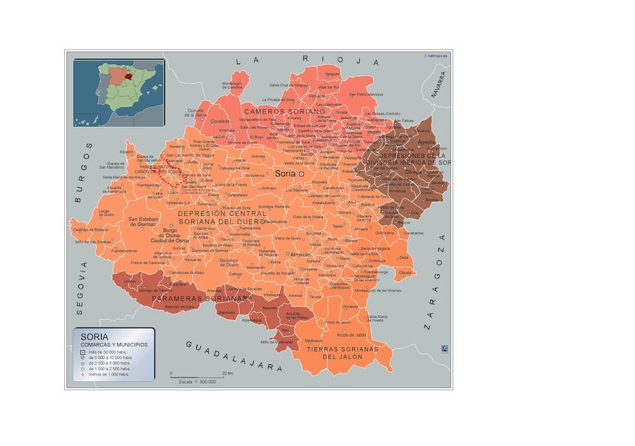
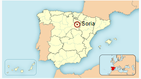
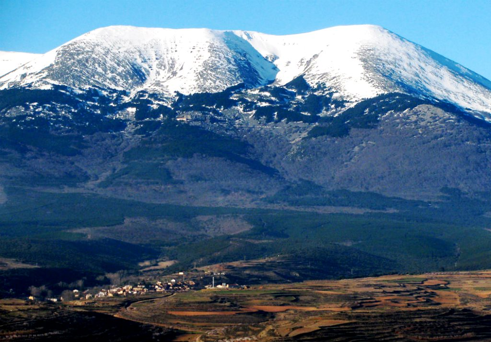
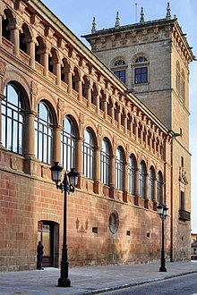
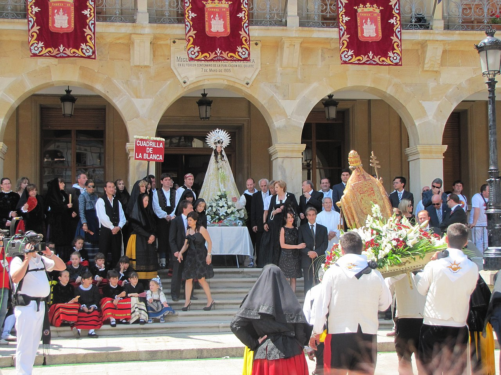
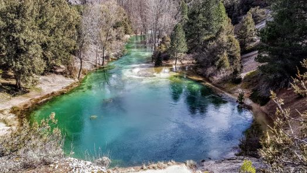
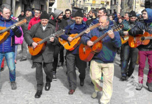
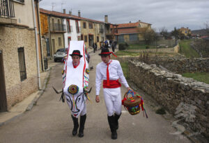
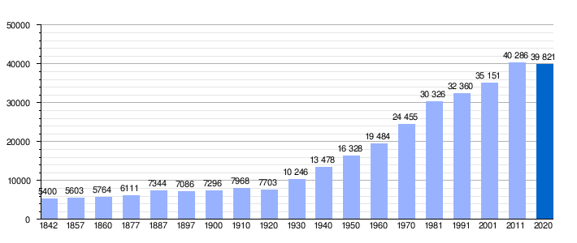

Ir a Zamora
Ir a Salamanca
Ir a leon
Ir a Valladolid
Ir a Palencia
Ir a Burgos
Ir a Segovia
Ir a Ávila
LOCALIZACIÓN
El municipio de Soria está a orillas del río Duero, en su curso alto, sobre las estribaciones del Sistema Ibérico. La ciudad de Soria se extiende sobre dos cerros (el cerro del Castillo, y el cerro del Mirón) y la cañada que los separa, en la margen derecha del Duero. Pese a que hay un barrio en la margen izquierda del Duero (al otro lado del Puente de Piedra), la ciudad se ha extendido hacia el oeste.
Además de la ciudad de Soria, en el término municipal se encuentran el barrio Las Casas, a 1,2 kilómetros de la ciudad, y tres localidades: Oteruelos, Pedrajas y Toledillo, situadas a varios kilómetros al noroeste. También incluye dos exclaves despoblados, el de los Pinares de Soria al oeste y un pequeño sector en la sierra de Toranzo al este. En su territorio hay tres embalses en el curso del río Duero: Los Rábanos (al sur), Campillo de Buitrago (al noroeste) y La Cuerda del Pozo (en el exclave de Los Pinares de Soria).
VOLVER ARRIBA
LOCALIDADES PRINCIPALES
A cotinuación se muestra un mapa interactivo de la provincia de Soria. Si clicamos en los nombres nos redirigira a la web oficial de cada zona 
VOLVER ARRIBA
GEOGRAFÍA
El término municipal se extiende un total de 27 240 hectáreas y su altitud oscila entre los 1000 y los 1200 m. Por ejemplo, la ciudad de Soria está a unos 1064 m, el cerro de Santa Ana a 1268 m y el pico del Berrún a 1224 m.18 A grandes rasgos, el relieve está determinado por el río Duero en su curso alto y las sierras que forman parte de las estribaciones del Sistema Ibérico soriano.
Forma parte de la comarca de Soria y se sitúa a 101 kilómetros de Logroño, a 142 kilómetros de Burgos, a 159 kilómetros de Zaragoza, a 178 kilómetros de Pamplona, a 207 kilómetros de Valladolid y a 231 kilómetros de Madrid.
source:https://es.wikipedia.org/wiki/Soria
VOLVER ARRIBA
PICO MÁS ALTO
Moncayo
Con Con sus 2314,30 m s. n. m., es la máxima cumbre del sistema Ibérico y uno de los picos más relevantes de la península ibérica, así como el pico más elevado tanto de la provincia zaragozana como de la soriana. El nombre de Moncayo viene del latín Mons Caius (monte muy pendiente).
source:https://zenithoteles.com/zenitlife/montanas-mas-altas-de-cada-provincia-espanola/
VOLVER ARRIBA
HISTORIA
Antigüedad y Alta Edad Media
En el monte Valonsadero, en el término del municipio, se encuentran pinturas rupestres datadas entre el año 3000 y 2000 a. C. (Calcolítico-Edad de Bronce). Fueron realizadas por pueblos nómadas que narraban en las paredes hechos cotidianos mezclados con deidades simples. Cuentan con la declaración de Bien de Interés Cultural (BIC).
En el actual cerro del Castillo se han descubierto restos de un asentamiento de la Edad del Hierro y celtibérico, supeditado este último a la ciudad celtíbera de Numancia, situada a siete kilómetros al norte de la actual ciudad de Soria. Numancia fue la ciudad más importante de los Arévacos, famosa por sus conflictos con Roma en el siglo ii a. C. Al frente de una coalición de celtíberos, derrotó en el año 153 a. C. a un ejército de 30 000 hombres mandados por el cónsul Quinto Fulvio Nobilior, dando inicio a veinte años de luchas intermitentes. Finalmente, Publio Cornelio Escipión Emiliano puso sitio a la ciudad con un largo cerco, capturándola en el verano del año 133 a. C., tras el suicidio de gran parte de su población. Numancia fue repoblada con pueblos celtíberos vecinos, y sufrió nuevas destrucciones durante las Guerras Sertorianas. En el siglo iii comienza su decadencia definitiva, y generalmente se considera que la ciudad dejó de ser ocupada en el siglo iv d. C., aunque nuevos hallazgos sugieren un asentamiento visigodo en el siglo vi d. C
Crisis de fin de la Edad Media
Como muestra de su pujanza, Soria consiguió uno de los preciados puestos de representación entre las dieciséis ciudades con derecho a enviar procuradores a las Cortes del reino de Castilla, y fue sede de alguna de sus reuniones (por ejemplo, la de 1380). En contrapartida, la inestabilidad política del último tercio del siglo xiv permitió que perdiese su condición de realengo, y que Enrique II la cediese al mercenario francés Bertrand Du Guesclin como pago por su apoyo en la Primera Guerra Civil Castellana contra Pedro I de Castilla. La cesión topó con la abierta hostilidad de una población que no deseaba abandonar el dominio real, y las tropas de Du Guescin tuvieron que tomar al asalto la ciudad, en 1369. Tras la renuncia de Du Gueslin, la ciudad siguió (hasta 1539) concediéndose en señorío a miembros de la familia real. Así, fue infante de Soria el futuro Juan I de Castilla, y duquesas de Soria las reinas Catalina de Lancaster, María de Aragón e Isabel de Portugal.
Edad Moderna
En 1492, el decreto de expulsión de los judíos, trajo la decadencia económica y social de Soria. Diferentes autores estiman la pérdida de población de entre el 6 % y el 25 %. En aquellas fechas la narración histórica de Soria se interrumpe porque tras la unión de los reinos de Navarra, Aragón y Castilla por los Reyes Católicos, la ciudad dejó de ser un enclave estratégico. Esta situación se prolongó durante la Edad Moderna, en la que el declive de la rentabilidad de la ganadería puso a la ciudad en una coyuntura de deterioro económico y demográfico muy grave. Por otra parte, los dirigentes locales de finales del siglo xvi no quisieron o no pudieron apoyar el velado plan del obispo Acosta para trasladar la sede de la diócesis de Osma a Soria, que hubiese aliviado en parte la decadencia de la ciudad.
Aqui agregamos un video donde explican de forma concisa la historia de Soria;VOLVER ARRIBA
CULTURA
Semana Santa
Declarada Fiesta de Interés Turístico Regional de Castilla y León. Sus tallas se encuentran a la altura de las gandes tallas castellanas (de gran valor artístico en escultura policromada) que participan en la Semana Santa en Castilla y León. Como muestra de ello, se puede contemplar durante la Semana de Pasión la bella imagen del Cristo del Humilladero (siglo xvi), atribuido a Juan de Juni o a su escuela.
Fiestas de San Juan
Declaradas Fiesta de Interés Turístico Regional de Castilla y León. De larga historia, según algunas interpretaciones es incluso mencionada en el Fuero de Soria de 1110
Lunes de Bailas
Gastronmia
Junto a las ciudades de Koroni, Cilento y Chauen, Soria fue particularmente destacada por la UNESCO al incluir la dieta mediterránea en su lista Representativa del Patrimonio Cultural Inmaterial de la Humanidad
- Congreso Internacional de Micología "Soria Gastronómica", bienal, celebrado a finales de octubre.
- Semana de la Tapa Micológica, última semana de octubre.
- Jornadas gastronómicas de la trufa negra de soria y La Ruta Dorada de la Trufa, jornadas gastronómicas dedicadas a la trufa negra en el que participan los bares y restaurantes de Soria y su provincia. Se celebra a principios de marzo.
- Jornadas de la Cuchara y el Tenedor, celebrada a principios de mayo, en la que se sirven tapas de temática libre.
VOLVER ARRIBA
NATURALEZA
A menos de media legua al norte de Muriel de la Fuente, la limpísima y surgente laguna es el nacimiento, o nacedero, del río Abión que, después de regar y convertir en fértil huerta las vegas de la Tierra de El Burgo, cede sus aguas al río Ucero en la villa episcopal.


VOLVER ARRIBA
TRADICIONES
Ronda popular de Duruelo de la Sierra
Duruelo de la Sierra celebra cada martes de Carnaval su ronda popular. Los mozos del pueblo son los encargados de llevar a cabo esta tradición. Se incluyen los hombres solteros mayores de 18 años, así como aquellos que hace menos de un año que se han casado.
Alrededor de este grupo de gente, dos de ellos, conocidos como «mayorales» llevan unas varas lo que les permiten poner orden. En su tarea son ayudados por los jóvenes de 17 años que van a entrar a mozos, denominados “motriles”, los cuales llevan un cinto.
La Barrosa en Abejar
Uno de los ritos más conocidos de la provincia vinculados al Carnaval es La Barrosa de Abejar. Este acto, que también se celebra el martes de Carnaval, está protagonizado por dos mozos, los quintos del año, que van ataviados de manera singular, portando un armazón que emula a un toro. A lo largo del día escenifican secuencias de viaje iniciático, muerte y resurrección. El ciclo sagrado de la vida a través de liturgias y gestos que se pierden en la noche de los tiempos.
VOLVER ARRIBA
OTROS ASPECTOS
Demografía
La población de la ciudad es de 39 398 habitantes, 18 579 hombres y 20 819 mujeres (2019), por lo que es la 49.ª capital de provincia por su población. Se observa un crecimiento constante de población durante todo el siglo xx.
VOLVER ARRIBA